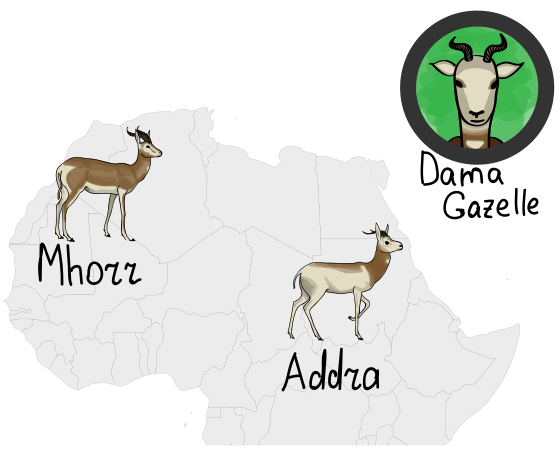
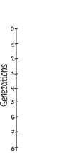
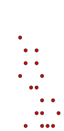
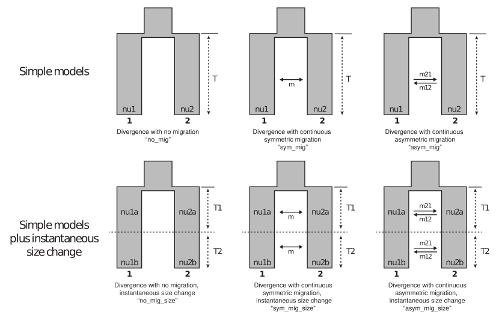
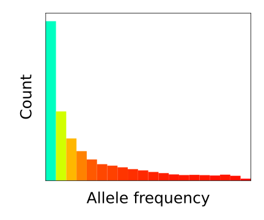
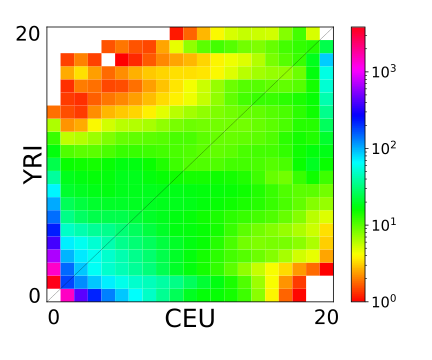
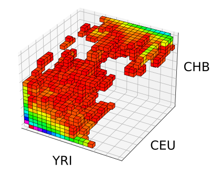
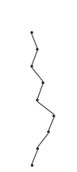
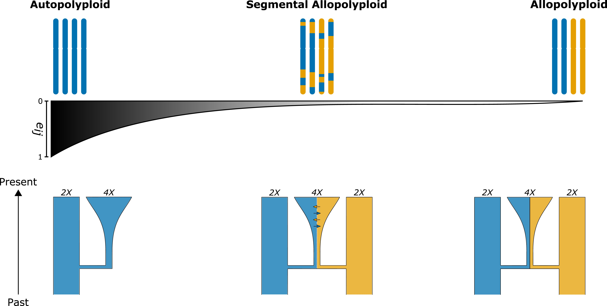
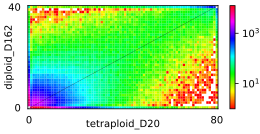

Agenda
- Demographic history
-
1. Evolutionary Simulations:
- Wright-Fisher Model
- Coalescence Process
- Evolutionary Simulation Frameworks
-
2. Demographic Inference
- Parameterized Models
- Site Frequency Spectrum
- SFS Simulation
- 3. Demographic Inference for Polyploids
Demographic History


1. Evolutionary Simulations
Wright-Fisher Model
- Generations are non-overlapping
- Two alleles in considered locus: $A$ () and $a$ ()
- Population of fixed size $2N$
- Wright-Fisher model: each generation $t+1$ is formed from generation $t$ using sampling with replacement
- Mutation can occur with the mutation rate $\mu$
- Forward-in-time process

Coalescence Process
- Generations are non-overlapping
- Two alleles in considered locus: $A$ () and $a$ ()
- Population of fixed size $2N$
- Coalescence process: each pair of lineages coalesce with a probability $\frac{1}{2N}$ at each generation backward in time
- Once coalescence tree is built, mutation are inserted forward in time with the mutation rate $\mu$

Evolutionary Simulation Frameworks
Evolutionary Simulation Frameworks
SLiM

- Forward in time simulations
- Backward in time simulations
- Slow for large population sizes
- Fast for large population sizes
- Well-suited for small population sizes
- Unstable for small population sizes
- Is configured through its own scripting language
- Is configured through Python scripting
- Flexible, e.g. supports simulation of selection, but can be quite complicated
- Easy-to-use, e.g. includes syntactic sugar, but is less flexible
Both simulators are included as engines for easy-to-use stdpopsim library
2.
Demographic Inference
Demographic Inference
Demographic Inference
Pipeline


Parameterized Models

*from Portik et al. 2017
Automatic Model Selection:
- dadi-pipeline [Portik et al. 2017]
- moments-pipeline [Leache et al. 2019]
- GADMA [Noskova et al. 2023]
Data Statistic:
Site Frequency Spectrum
Site Frequency Spectrum
Derived allele is a new allele formed by mutation.
Site frequency spectrum (SFS) of P populations is the joint distribution of the derived allele frequencies of a given set of loci (SNP’s) across P populations.



Site Frequency Spectrum
Site Frequency Spectrum
Site Frequency Spectrum
Site Frequency Spectrum
SFS Simulation
Wright-Fisher
Model
- Generations are non-overlapping
- Two alleles in considered locus: $A$ () and $a$ ()
- Population of fixed size $2N$
- Wright-Fisher model: each generation $t+1$ is formed from generation $t$ using sampling with replacement
- Mutation can occur with the mutation rate $\mu$
- Forward-in-time process
Wright-Fisher
Model
Diffusion
- $X(t)$ — the rel. frequency of allele $A$ at generation $t$
-
$\psi_i$ — the probability to choose $A$ if its frequency is $i$
$$\footnotesize \text{e.g.}\quad \psi_i = \frac{i}{2N}, \quad \text{for constant pop. size } 2N$$
-
Wright-Fisher model: $X(t)$ — Markov chain with binomial transition:
$$\footnotesize P\left(X(t+1) = \frac{j}{2N} \biggr\rvert X(t) = \frac{i}{2N}\right) = \binom{2N}{j} (\psi_i)^j (1-\psi_i)^{2N - j} $$
-
Expected SFS:
$$SFS[d] = \sum_{i=0}^{2N} \binom{n}{d} \psi_i^d (1-\psi_i)^{n-d} P(2N \cdot X(T)= i))$$
- If $N \to \infty$ then $X(t)$ $\to$ continuous-time continuous-space Markov chain (Markov process)
- This process is defined by transition probability density $p(\tau, x, y)$ to go from state $x$ to state $y$ in time step of $\tau$
-
$p(\tau, x, y)$ satisfies diffusion equation:
$$\frac{\partial}{\partial \tau}p(\tau, x, y) = \frac{1}{2} \frac{\partial^2}{{\partial y}^2} \left[b(y)p(\tau, x, y)\right] - \frac{\partial}{\partial y} \left[a(y) p(\tau, x, y)\right]$$ -
Expected SFS:
$$SFS[d] = \int_{i=0}^{2N} \binom{n}{d} x^d (1-x)^{n-d} p(T, x) dx$$

Demographic Inference
Pipeline
3.
Demographic Inference for Polyploids
Demographic Inference for Polyploids

*from Blischak et al. 2023
Demographic Inference for Polyploids
Using simulations with SLiM:
- To what extend can we infer demographic history of autotetraploids?
- How accurate can we distinguish autotetraploids from segmental allotetraploids?
- Can we determine regions that have disomic inheritance in segmental allotetraploids?
Using demographic inference with moments:
- What is the demography of Dianthus sylvestris?

Thank you!